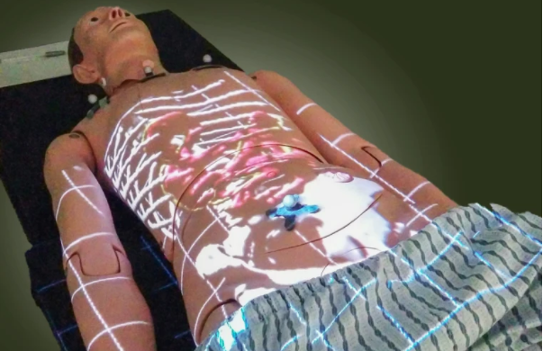

In de AR/VR lecture werd er kennis gemaakt met AR en VR en welke toepassingen deze technologieën hebben in de praktijk. Om aan het eind een eindproduct te leveren, wordt er als eerst een introductie opdracht, waarbij verder wordt verdiept in AR en VR. De eerste opdracht was om zelf aantal ideeën te verzinnen met AR/VR voor verschillende gebieden in het dagelijks leven.
A. Healthcare
Een AR omgeving die huisartsen kunnen gebruiken om lichamelijke controles makkelijker uit te leggen aan patiënten die weinig tot geen medische kennis hebben. De patiënt stapt in een kamer waar allerlei sensoren zijn. Het maakt dan een scan van de persoon. Met deze scan wordt er een contour gemaakt van het lichaam, waarbij uiteindelijk een digitale lichaam over patiënt weergeven kan worden. De huisarts kan dan letterlijk het lichaam van binnenuit aanwijzen en uitleggen aan de patiënt.

B. Cars, car technology, road construction and / or infrastructure
Een AR display in een auto die Google Maps in een 3D omgeving laat zien die met pijlen waar je naar toe moet rijden. In Google maps wordt er met pijlen weergeven waar de rijder naar toe moet rijden om op de eindbestemming te komen. Ditzelfde principe wordt dan met AR ook bereikt, maar dan in een grotere omgeving. De pijlen worden nu als het ware op de weg weergeven. De rijder kan dan in real-time deze pijlen volgen zonder steeds op de navigatie te kijken.
C. Public transport
Een interactieve applicatie die met de telefoon camera alle openbaar vervoer informatie weergeeft in een AR omgeving. De gebruiker scant dan bijvoorbeeld een tramhalte. Alle informatie als welke trams er daar stoppen, vertrektijden, mogelijke vertragingen, etc. worden allemaal weergeven. De gebruiker kan daarnaast een specifieke OV vervoerder kiezen en er wordt dan een route weergeven die de gebruiker kan gebruiken om daar te komen. De vertrektijden worden dan ook constant geüpdatet om mogelijke vertragingen zo snel mogelijk aan te geven.
Research
Spatial
Spatial is een net als een Microsoft Teams een digitale werkplaats waarmee je met collega’s en studenten online samen kan werken. Een twist aan deze applicatie is dat het volledig in AR gedaan wordt. Je maakt een eigen avatar en met deze avatar kan je comminuceren met andere mensen. Je avatar wordt dan met AR weergeven aan je collega’s. Op deze manier sta je als het ware in de kamer van iemand anders. Het is eigenlijk een soort hologram meeting app.
Wat mij erg fascineert aan deze applicatie is hoe interactief het is. Je kan bijna van alles doen met notes maken en delen. Ook is het erg verbazend hoe dichtbij hologram calls zijn in 2020. Wat je vroeger alleen in scifi films zag zoals Star Wars is nu met Spatial eigenlijk bijna mogelijk.